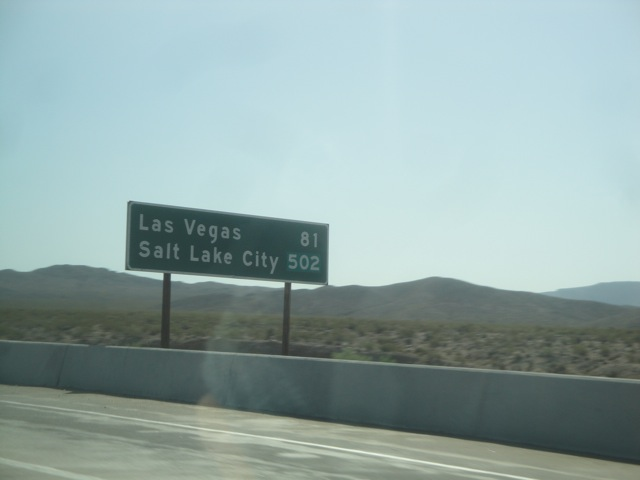
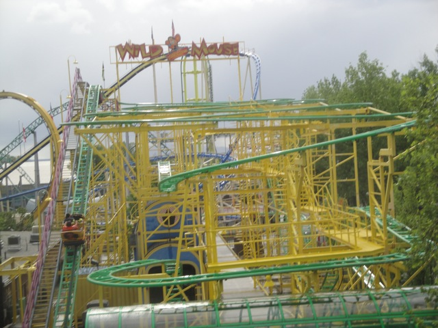
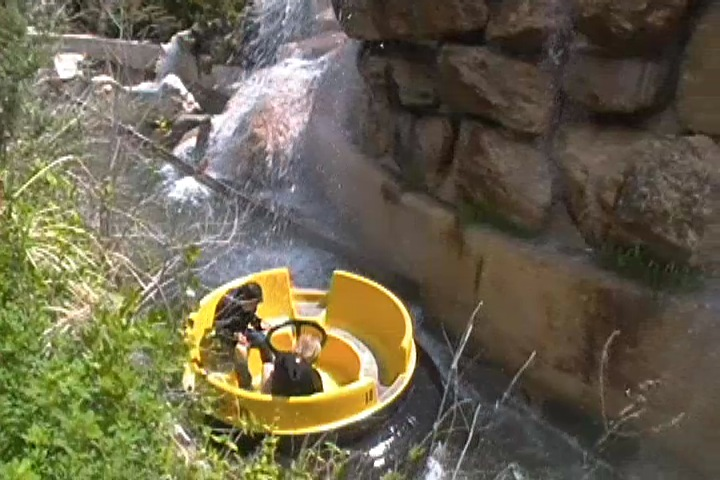
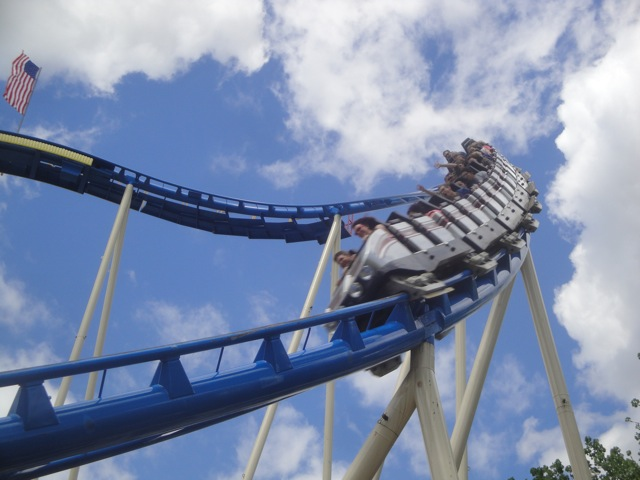

All right. Its time for yet another amazing Incrediblecoasters Road Trip. This time, we decided to head on up to Lagoon in Salt Lake City, UT. After Cody had visited the park in 2010 and raved about how great it was, I knew it was high on my to visit list. Then in 2011, we were planning on doing this road trip with Caeser. But thanks to his divorce problems and sh*tty car, we had to cancel the trip. But that attempt at the trip with Ceaser made us want to do it more and more. And with the overwhelming success of the Glass Beach Road Trip, which was our first ever road trip, we decided to do it in 2013 with Alisa. Then a week before the trip started, we met a friend, and he joined us on the trip. And here we are, on our way to Lagoon!!! =)
All right. First stop of the morning, the Barstow Train Station for breakfast and stretching our legs.
Dude!!! This place is awesome!!! I finally found something in Barstow that I actually like!!! (Oh, and BTW, Hi Brittney and David) =).
Trust me. We are totally gonna have an ass kicking day.
Quick stop at the abandoned water park anyone?
If there's any random road at the Mojave Desert we're stopping at, it's totally Zzyzx Rd.
Just so you know, that is indeed the worlds largest thermometer. And no. It does not work.

Hey everyone!!! Only 502 more miles to go!!! =)
Oh god!!! Not the valley!!! This is by far the worst part of the whole drive to Salt Lake City!!!
Damn you Buffalo Bills!!!! Why can't you have a decent operating schedule so we can get on Desperado!!!!
Is it me, or have we been in the desert for so long that I'm starting to hallucinate?
We'll be back for you on Monday Las Vegas.
Ok. This is just freaking awesome. The 15 Freeway just slices through the Virgin River Gorge in Arizona like butter. =)
We have officially crossed the state line and are now in Utah.
All right. For lunch, we stopped at Cracker Barrel since I hadn't eaten there before and was told that they were really good.
Yeah. We sure ain't in California no more.
This place is amazing!!! I absolutely loved the food here!!! We need this place to come to CA and we'll totally be eating here in Texas.
You can tell we're in Utah now because its pretty outside.
And yeah. It actually rains here in Utah. And considering how we only got 3 inches of rain and had to seriously cut our cliff jumping season super short because of it, we need A LOT more rain in California.
Dude!!! There's still snow in Utah!!! You could go skiing right now if you really wanted to!!!
Hey truck. Thanks for randomly deciding to switch lanes and not even look to see if anyone was there. Next time, uses your mirrors before you merge asshole.
Hey Shane. That's a nice waterpark you have there. Too bad we won't be stopping there though.
All right. We're finally in Salt Lake City.
WE DID IT!!!! WE MADE IT TO LAGOON IN ONE DAY!!!!! =)
Hard to belive that at 4:00 am, we were all the way in Ventura, and now at 5:00 pm, we are here at Lagoon.
Our original plan was to just go in and take pictures and video and ride stuff on Sunday. But then we found out that they changed the system and instead of doing tickets, they just did a single admission and unlimited rides for the rest of the day. So we paid an extra $45 for an extra day at Lagoon so we could get our night shots. And hey. More time at Lagoon to ride stuff and have fun. I'm happy with this.
And yeah. First order of buisness, Wicked. This is a coaster I've been interested in ever since I first saw it.
That airtime hill may not be super intense, but its fun. And actually fairly fast despite those trims.
And that heartline twist has some seriously good hangtime.
Yeah. Its essentially Laser from Dorney Park. Except its in Utah and not now traveling the German Fairs.
So glad that there's still rides like this left in the world because they really are awesome rides.
Up next, the Wild Mouse.
This has to take the award for my favorite Wild Mouse. First off, the program is insane to the point that it makes the European Mice seem tame.

Plus, it goes through a house. How freakin awesome is that!!!
Lots of great shots of Roller Coaster from the parking lot.
This park is f*cking awesome.
This fountain at the front of the park is just a ton of fun to play in and run around.
Ooh. Artsy shot.
The extra $45 was worth it for the night shots alone.
This park just comes to life at night. So beautiful.
Hey Alisa. Wouldn't you rather have an owl right here?
Ooh. Look at all the pretty lights.
Sweet!!! Next up, we're doing Jet Star 2!!!
While sitting in the back is uncomfortable on your legs, this is a completely INSANE ride. Its crazy to the point of making the Whizzer want to commit suicide.
Collosus the Fire Dragon at night.
Love all the pretty lights.
Best way to end this day is with some night rides on Wicked.
This place is awesome. I can't wait to come back tomorrow.
All right. Before we head off to Lagoon, we decided to check out the Salt Lake Temple. Cause hey. Its pretty.
This place is to Mormons what Vatican City is to Catholics.
I gotta admit. I really like Salt Lake City. Its got a unique vibe here isn't any city quite like it.
Plus the air here is actually nice to breathe unlike in L.A. This would be a great place to go running.
Welcome to Mormonland.
Ooh. Pretty fountain.
More prettiness from Salt Lake City.
Hey Cody!!! Don't you wanna take a detour and extend the trip to Cheyanne!!? Bet you'd love that. =)
We're back for Round 2 of Fun at Lagoon!! =)
Lagoon ranks up there as one of the most beautiful parks I've visited.
More Lagoon prettiness.
The Cinnamon Rolls at Lagoon are really good and do make for a great brunch/lunch.
Not sure if this creek was here before Lagoon or if Lagoon added it. Either way, I love it.

Gotta thank Cody for talking me into riding their rapids ride, cause it is GREAT!!! My 2nd favorite rapids ride only behind River Quest @ Phantasialand. This ride not only gets you soaking wet via waterfall, but it has great rapids and goes through a really pretty garden.
Another one of Lagoon's charms is their Pioneer Village they have hidden in the back of the park. Its a great place to look at 18th Century Utah and explore what things were like. For instance, a coffins supposed to go inside there.
I really wish Knott's Ghost Town was as nice as Pioneer Village. I'd spent a lot more time there if it was.
Something tells me that Cody wants that Pennyfarther.
What do you mean I have to back to the Dentist's Office!!? I just got 5 cavities last month!!!
Will you kindly have a seat?
Look at the bright side. You may have gotten all your teeth yanked out with no anesthetics, but at least you'll get to drink some good Whisky.
All right. Time to get the rest of the credits at Lagoon.
This is dedicated to anyone reading this with a fear of spiders.
Spider is another one of those Mauher Shone Spinning Coasters.
Yeah. I'm spoiled by Winjas, but this is still a great ride.
We gotta get more of these rides built and I'm glad that the Santa Cruz Beach Boardwalk is getting a clone of this.
These rides do quite a good amount of spinning. =)
Up next, Roller Coaster.
Leave it in both colors. It's funkier that way. =)
I gotta admit. This ride has to take the award for exceeding my expectations the most on the entire trip.
I was expecting this ride to be a cruiser snoozer similar to High Roller @ Valleyfair.
But this was a really fun roller coaster that was a ton of fun and just flowed really well.
There's actually airtime right there. Its not super strong or anything, but its there.
It's not gonna crack my Top 10 List, but its a very fun ride.
STOP!!!!! You guys are the lucky train to get a double ride. Glad I got it as its a fun ride.
Yes. I am a credit whore.
After Puff the Fire Dragon, this actually gonna thrill me.
Hey, its a Non-Vekoma Roller Skater that plays Surf Music in the mountains of Utah. I can't complain about that. =)
All right. Time to get the last credit needed at the park.
Oh joy. Another kiddy SLC.
Yep. Its a rough one. I think Vekoma should require from now on that all kiddy SLCs should be required to have lap bars like the one at Movie Park Germany.
I can't believe that there are only two Air Races in the world!!! These rides are AWESOME!!!! They didn't make my Top 10 Flat Rides List for nothing!!!
Not nearly as cheesy as I was expecting.
Sweet!!! Time for more rides on Wicked.
Just in case you're wondering how Wicked works.
That launch tower on Wicked is very...interesting. Its like its got two mini launches. A launch at the bottom. Go up, lose speed. Launch again, go fast. Crawl at the top. Drop down vertically.
I can't think of any ride that is similar to Wicked.
After a fun first half, it kind of gets weak in the second half.
But even the second half has some fun laterals on the 90 degree sideways turns.
Check out all of our Wicked Raw Footage to get a better idea of how this ride is.

Yes. I would like more rides on the Schwarzkoph please.
If you sit on the ride alone and don't brace for the laterals, it'll literally knock you down. =)
Why are these rides so rare? =(
For as much as I love Lagoon, there is only one flaw with the park. The no single riders rule in the front and back on Collosus and the Bat. I get why they have it, but I'm sorry. It's still a stupid rule that I feel they should'nt have. But whatever. Lagoon is still freaking awesome.
The enterprise here runs great. Why can't other U.S parks run their enterprise this well?
For as trippy as this Top Spin looks, its actually fairly tame.
This was actually a really cool dark ride. And it went on for a lot longer than I expected.
Between this and Collosus, I am very pleased that Lagoon is preserving all these great Schwarzkophs.
Its called Jet Star 2 because you take a #2 while riding.
HOLY SH*T!!! THIS TOP SCAN RUNS SUCH A GOOD PROGRAM!!!!! =D
The S&S Tower may run a weak program, but at least it looks nice.
Yeah. I feel a ride on Collosus in the rain is in order.
Yep. Unlike many U.S parks that close when a raindrop hits the ground, everything at Lagoon stays open. Another reason I love this park.
Another great use for the Pioneer Village. Shelter from the rain.
Damn. Its raining HARD outside.
Sweet. Lets take a ride on the skyride.
Should've taken a ride on the Rock-O-Plane. Oh well.
Roller Coaster from the Skyride.
Lagoon is one of the few parks in the country that gets the concept of bumper cars is to *gasp* BUMP PEOPLE!!!!! None of this bullsh*t with no head-on bumping, one way rules, or flat out no bumping rules. Just go for it. =)
All right. Lets get some shots from the Ferris Wheel.
To make this park even more awesome, the Ferris Wheel is also a teacup ride. =)
Jet Star 2 from the Ferris Wheel.
See if you can spot the Great Salt Lake in this photo.
Absolutely love the setting of Lagoon. Thinking of updating my Top 10 Park Settings List so I can add Lagoon.
Love this shot of Lagoon from the Ferris Wheel.
Some more rides on Collosus the Fire Dragon are in order.
And now its time to marathon Wicked before we leave.
There's no doubt about it. Wicked is one of the best family coasters in the country.
Just make sure you don't forget your umbrella on the ride. ;)
Hard to believe that this came from the same people that brought us Jaguar @ Knotts.
Inline Twist Goodness!!!
We need more coasters like this built in the world. They really are great.
"I won a prize just for returning my locker key!!!"
I have to admit. Lagoon kicked tons of ass and is a fantastic theme park. I am really looking foreword to my next visit whenever that will be.